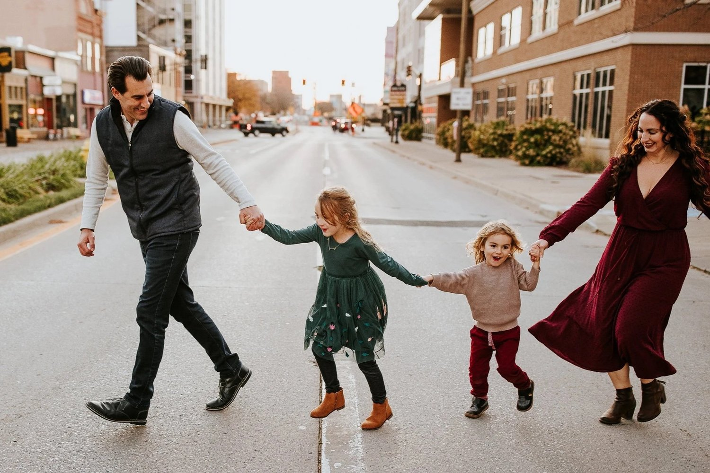
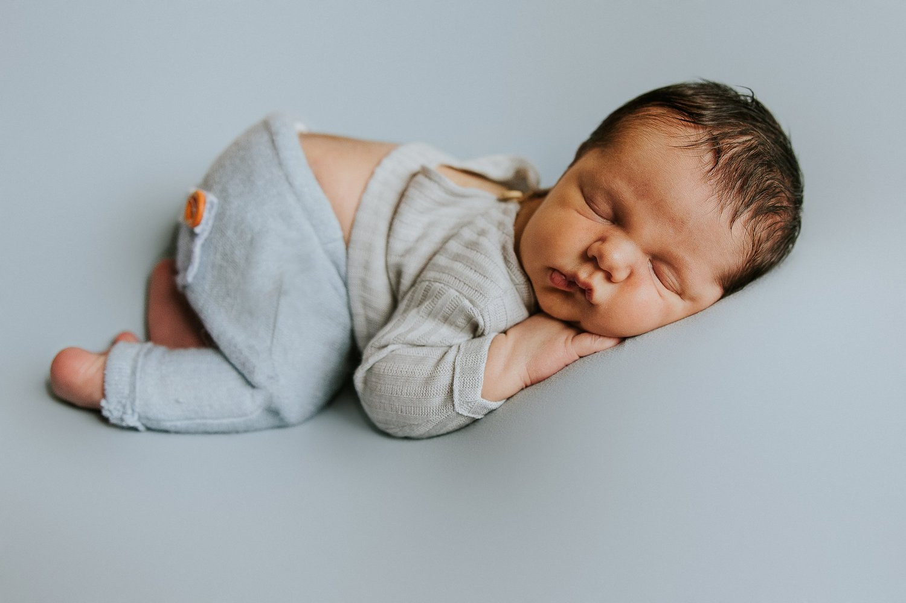
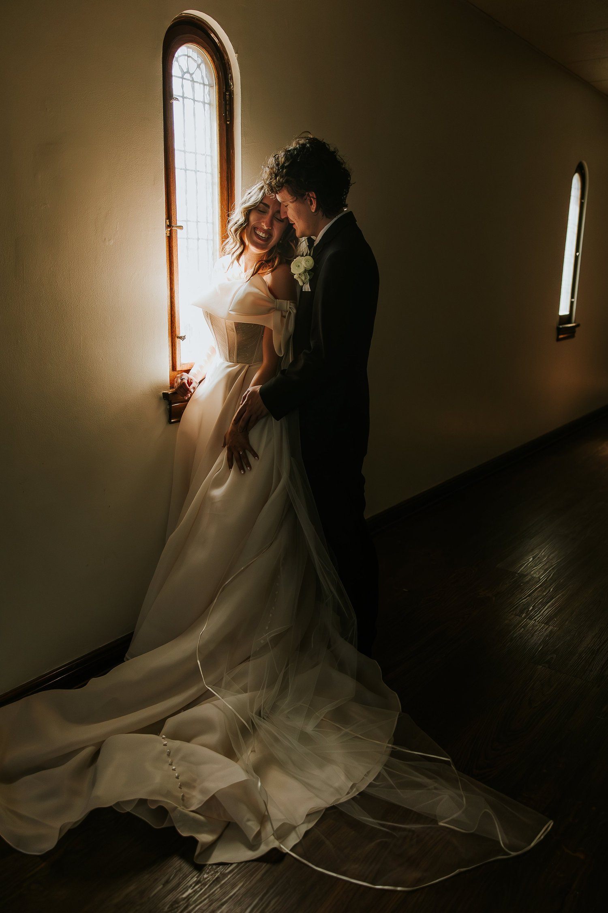
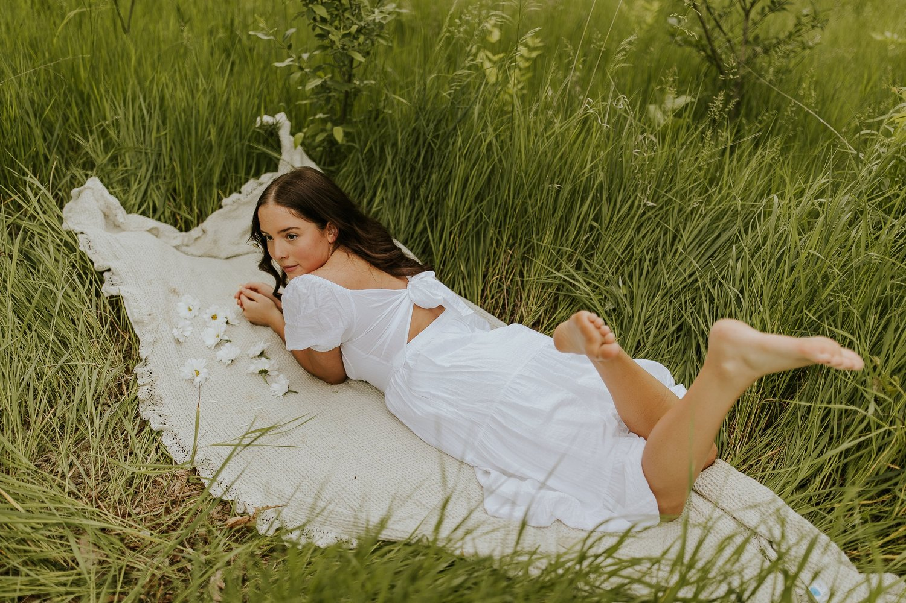
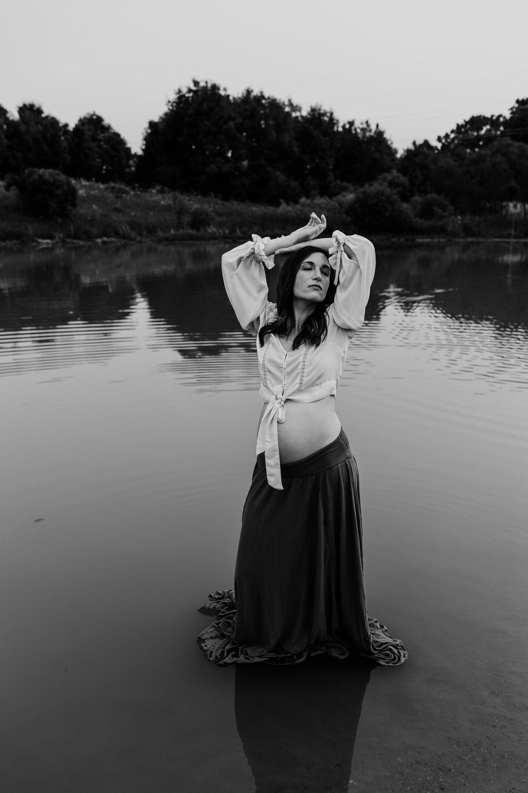
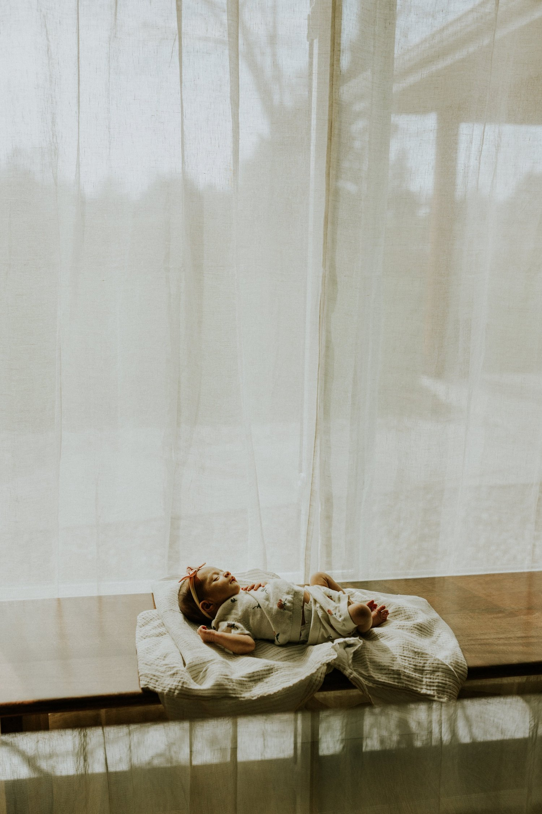

Everyday reality, with an artistic twist.
Natural-light lifestyle portraits in Fort Wayne, Indiana.
The studio
Portraits that look like your life, not a pose.
Addie Fath Photography is a natural-light photography studio in Fort Wayne, specializing in lifestyle portraits. Addie Fath has 15 years in business. Her first gig was at Sears Portrait Studio, and she holds a Business degree.
Sessions cover maternity, newborns, family and children, seniors, birth, and weddings. Each session is photographed in natural light, in the studio or outdoors.
5.0 from 58 Google reviews.
Sessions
Six kinds of sessions
- 01Maternityfrom $340
- 02Newbornsfrom $450
- 03Family and Childrenfrom $340
- 04Seniorsfrom $340
- 05Birth$2,000
- 06Weddingfrom $1,800
Recent work
From the studio





Visit
The studio is on Wayne Street.
203 W Wayne St Ste 306, Fort Wayne, IN 46802. Call (260) 385-0050 or email addiefathphoto@gmail.com to ask about a session. Hours are not published.